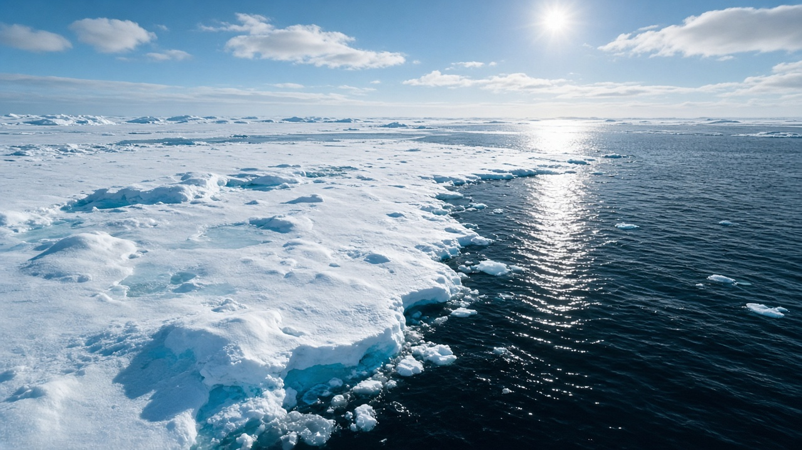
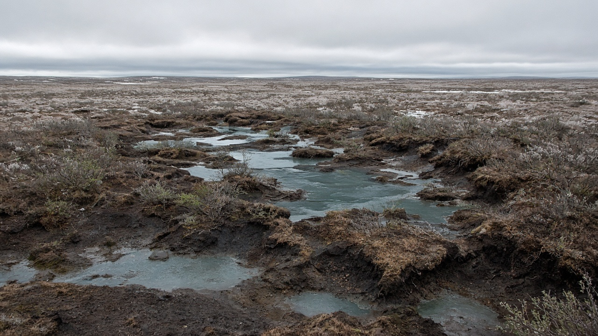
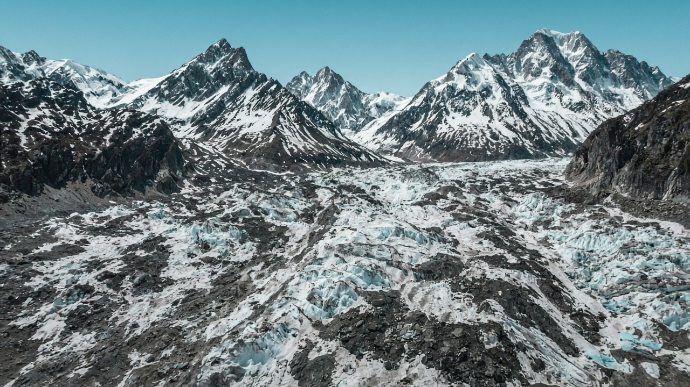

Climate Feedback Loops (Albedo, Permafrost)
Published on July 14, 2026

Climate feedback loops are processes in which an initial warming triggers changes that either amplify or dampen further warming. Positive feedbacks accelerate climate change, while negative feedbacks slow it. One of the most important positive feedbacks involves albedo—the reflectivity of Earth's surface. Ice and snow reflect a large fraction of incoming sunlight back to space. As they melt, darker ocean water or land absorbs more energy, causing additional warming and further melt in a self-reinforcing cycle especially powerful in the Arctic and on mountain glaciers.
Permafrost thaw represents another concerning feedback. Permafrost is ground that remains frozen for two or more years and stores vast quantities of organic carbon in Arctic and high-altitude regions. When it thaws, microbes decompose previously frozen plant material, releasing carbon dioxide and methane into the atmosphere. This additional greenhouse gas loading can accelerate warming globally, even though most emissions originate far from major population centers. Wildfires, which are increasing in frequency in boreal forests and some mountain regions, can further expose permafrost and release stored carbon while reducing forest cover that would otherwise sequester CO₂.
Scientists incorporate feedbacks into climate models, though uncertainties remain about the timing and magnitude of some processes, particularly irreversible tipping points. Water vapor itself is a feedback because warmer air holds more moisture, and water vapor is a greenhouse gas—though it condenses and precipitates quickly, unlike long-lived CO₂. Cloud feedbacks are complex and can either warm or cool depending on altitude and type. Understanding these loops explains why climate change can accelerate beyond linear expectations and why early, deep emission cuts are critical. They also highlight that some impacts, once set in motion, may continue for decades even if emissions stop immediately.

जलवायु प्रतिपुष्टि चक्र भनेको प्रारम्भिक तापक्रम वृद्धिले थप तापक्रम वृद्धि बढाउने वा घटाउने परिवर्तन सुरु गर्ने प्रक्रिया हो। सकारात्मक प्रतिपुष्टिले जलवायु परिवर्तन तीव्र बनाउँछ, भने नकारात्मक प्रतिपुष्टिले ढिलो पार्छ। सबैभन्दा महत्त्वपूर्ण सकारात्मक प्रतिपुष्टिहरूमध्ये एक अल्बेडो—पृथ्वीको सतहको परावर्तकता—सम्बन्धित छ। बरफ र हिउँ आउने सूर्यको प्रकाशको ठूलो भाग अन्तरिक्षतर्फ फर्काउँछ। ती पग्लिँदा गाढा समुद्री पानी वा भूमिले बढी ऊर्जा सोस्छ, थप तापक्रम वृद्धि र थप पग्लिने चक्र सिर्जना गर्छ, विशेष गरी आर्कटिक र पहाडी हिमनदीमा।
स्थायी मर्सो पग्लिनु अर्को चिन्ताजनक प्रतिपुष्टि हो। स्थायी मर्सो भनेको दुई वर्ष वा बढी जमेको रहने माटो हो, जसले आर्कटिक र उच्च पहाडी क्षेत्रमा विशाल मात्रामा जैविक कार्बन भण्डारण गर्छ। पग्लिँदा सूक्ष्मजीवहरूले पहिले जमेको वनस्पति सामग्री विघटन गर्छन्, वातावरणमा कार्बन डाइअक्साइड र मिथेन छोड्छन्। यो थप ग्रीनहाउस ग्यासले विश्वव्यापी रूपमा तापक्रम वृद्धि तीव्र बनाउन सक्छ, यद्यपि अधिकांश उत्सर्जन प्रमुख जनसंख्या केन्द्रबाट टाढा उत्पन्न हुन्छ। उत्तरी वन र केही पहाडी क्षेत्रमा बढ्दो जंगल आगोले स्थायी मर्सो थप उजागर गर्न र सञ्चित कार्बन छोड्न सक्छ, साथै कार्बनडाईअक्साइड भण्डारण गर्ने वन ढाका घटाउँछ।
वैज्ञानिकहरूले प्रतिपुष्टिहरू जलवायु मोडेलमा समावेश गर्छन्, यद्यपि केही प्रक्रियाको समय र परिमाण, विशेष गरी अपरिवर्तनीय निर्णायक बिन्दु, बारे अनिश्चितता रहन्छ। जलवाष्प स्वयं प्रतिपुष्टि हो किनभने तातो हावाले बढी नमी समात्छ, र जलवाष्प ग्रीनहाउस ग्यास हो—यद्यपि यो कार्बनडाईअक्साइड जस्तो लामो समय रहँदैन, चाँडै संघनित र वर्षा हुन्छ। बादल प्रतिपुष्टि जटिल छ र उचाइ र प्रकार अनुसार ताप वा शीतल पार्न सक्छ। यी चक्र बुझ्दा जलवायु परिवर्तन रेखीय अपेक्षाभन्दा बढी तीव्र हुन सक्छ र प्रारम्भिक, गहन उत्सर्जन कटौती किन महत्त्वपूर्ण छ भन्ने स्पष्ट हुन्छ। केही प्रभाव एक पटक सुरु भएपछि उत्सर्जन तुरुन्त रोकिए पनि दशकौँ जारी रहन सक्छन्।

जलवायु प्रतिपुष्टि चक्र वे प्रक्रियाएँ हैं जिनमें प्रारंभिक गर्मी आगे की गर्मी को बढ़ाने या घटाने वाले परिवर्तन शुरू करती है। सकारात्मक प्रतिपुष्टि जलवायु परिवर्तन को तेज करती है, जबकि नकारात्मक प्रतिपुष्टि इसे धीमा करती है। सबसे महत्वपूर्ण सकारात्मक प्रतिपुष्टियों में से एक अल्बेडो—पृथ्वी की सतह की परावर्तकता—से जुड़ा है। बर्फ और हिम आने वाले सूर्य के प्रकाश का बड़ा हिस्सा अंतरिक्ष की ओर लौटाते हैं। पिघलने पर गहरा समुद्री पानी या भूमि अधिक ऊर्जा अवशोषित करती है, अतिरिक्त गर्मी और और पिघलाव पैदा करती है—यह चक्र आर्कटिक और पहाड़ी ग्लेशियरों में विशेष रूप से शक्तिशाली है।
स्थायी मर्स द्रवीकरण एक और चिंताजनक प्रतिपुष्टि है। स्थायी मर्स वह भूमि है जो दो या अधिक वर्षों तक जमी रहती है और आर्कटिक व ऊँचे पहाड़ी क्षेत्रों में विशाल मात्रा में जैविक कार्बन संग्रहीत करती है। पिघलने पर सूक्ष्मजीव पहले जमे पौध सामग्री को विघटित करते हैं, वातावरण में कार्बन डाइऑक्साइड और मीथेन छोड़ते हैं। यह अतिरिक्त ग्रीनहाउस गैस वैश्विक स्तर पर गर्मी तेज कर सकती है, हालाँकि अधिकांश उत्सर्जन प्रमुख जनसंख्या केंद्रों से दूर उत्पन्न होता है। उत्तरी वन और कुछ पहाड़ी क्षेत्रों में बढ़ती जंगल की आग स्थायी मर्स को और उजागर कर सकती है, संग्रहीत कार्बन छोड़ सकती है और कार्बनडाईअक्साइड को भंडारित करने वाले वन ढकाव को कम कर सकती है।
वैज्ञानिक प्रतिपुष्टियों को जलवायु मॉडल में शामिल करते हैं, हालाँकि कुछ प्रक्रियाओं के समय और परिमाण, विशेष रूप से अपरिवर्तनीय निर्णायक बिन्दु, के बारे में अनिश्चितता बनी रहती है। जल वाष्प स्वयं प्रतिपुष्टि है क्योंकि गर्म हवा अधिक नमी रखती है, और जल वाष्प ग्रीनहाउस गैस है—हालाँकि यह कार्बनडाईअक्साइड की तरह लंबे समय तक नहीं रहती, जल्दी संघनित और वर्षा हो जाती है। बादल प्रतिपुष्टि जटिल है और ऊँचाई व प्रकार के अनुसार गर्म या ठंडा कर सकती है। इन चक्रों को समझने से पता चलता है कि जलवायु परिवर्तन रैखिक अपेक्षाओं से अधिक तेज हो सकता है और प्रारंभिक, गहन उत्सर्जन कटौती क्यों महत्वपूर्ण है। कुछ प्रभाव एक बार शुरू होने पर उत्सर्जन तुरंत रुकने पर भी दशकों तक जारी रह सकते हैं।